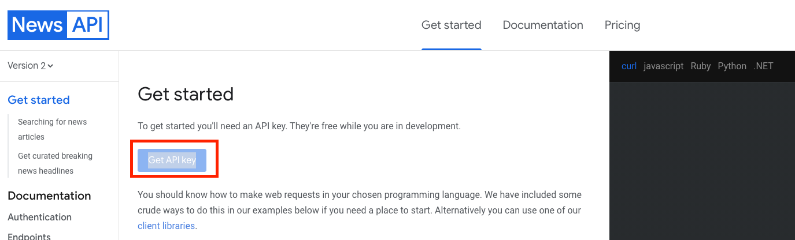
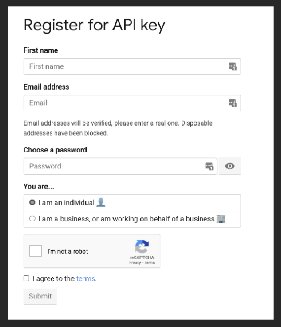
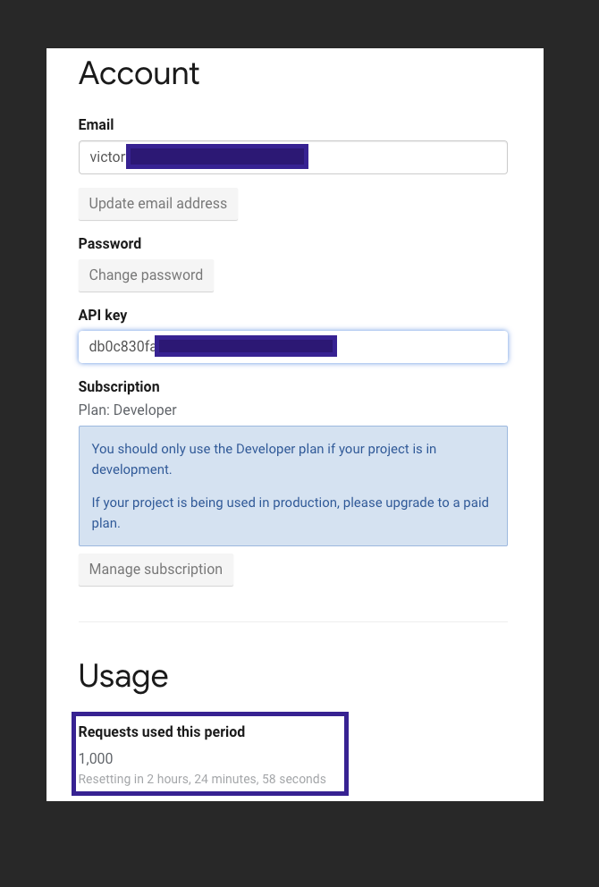
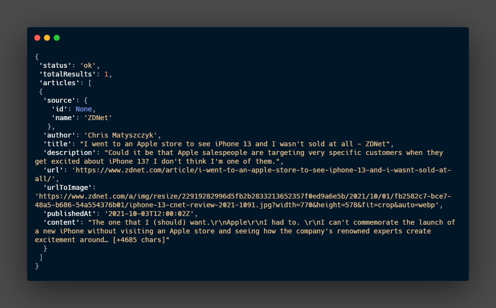

News API¶
News API - Search News and Blog Articles on the Web
We can get News and articles from the web using this API.
Get the API Key¶
Obtaining the API key is one of the easiest tasks with this API. The only thing we need is an email.
- Go to the get started page.

- Click Get API Key.

- Fill the form, and you get the API Key. Be aware there is a limitation to the free API.

This API provides simple and complete documentation, within this documentation, we can find information about Client libraries in different languages. Although the Python client mattlisiv/newsapi-python is not an official client it can be useful, at the end of these notes some notes about newsapi-python.
News API Description.¶
We can say this API is subdivided into two main endpoints, with some specialization in one of these subdivisions, these subdivisions are the endpoints.
The first endpoint everything gathers all information about a specific topic, and the second endpoint top-headlines is to get the top-headlines base of country and language with the option of select specific keywords, this endpoint is top-headlines.
/v2/everything: The API claim there are more than 80,000 news and blogs./v2/top-headlines: This can be used to get the top headlines for a country or specific toping in a region./v2/top-headlines/source: This is a specialized endpoint, it returns information (including name, description, and category) about the most notable sources available for obtaining top headlines from.
Authentication¶
They are three different ways to authenticate with the API:
- As part of the query string,
apiKey="here API key" - via
X-Api-KeyHTTP header. - Via the
AuthorizationHTTP header. Including Bearer is optional.
If the authentication is not done correctly the 401 - Unauthorized HTTP error.
Endpoints¶
/v2/everything¶
Like mentioned before the API documentation claim 80,000 news and blogs, this Endpoint is a good option for general-purpose or discovery and analysis.
For more information check the official documentation
Everything - Documentation - News API
Request parameters¶
Some request parameters:
apiKeythis is can be pass as part of the string query or as another form previously discussed.qandqInTitleThe first parameter is used to provide the phrases or keywords to search. The secondqInTitleis the focus on keywords and phrases present just in the title of the new.sourceswith this parameter we can limit the sources in the response.fromandtoIt is self-explanatory it will limit the time frame for the news.
Response Object¶
The response Object will be in JSON format, we can get more information in the documentation but here is a list of some of the most relevant parameters of this response.
From the code above:
statusis just an indicator if the response is successful.totalResultthe number of results.articleis an array of JSON objects that contain the news object response.
Bellow the parameters within each article array.
| Parameter | Type | Description |
|---|---|---|
| source | string | This identifies the article, it contains two parameter id and display name name. |
| author | string | The author of the article |
| title | string | The headline or title of the article |
| description | string | A short snippet of the news |
| url | string | URL of the article |
| urlToImage | string | The headline or title of the article |
| publishedAt | string | date and time of published ( UTC+000) |
| content | string | content of the article truncated to 200 characters. |
/v2/top-headlines¶
This endpoint provides breaking news or headlines for a country, or top news from a specific category in a specific country, a single source, or multiple sources.
The documentation recommends this endpoint to get news for stock tickers or financial-related topics.
Top headlines - Documentation - News API
Request parameters¶
Some request parameters:
apiKeythis is can be pass as part of the string query or as another form previously discussed.countryfollow the 2-letter ISO 3166-1 code. example:comeans Colombia.categorypossible options:businessentertainmentgeneralhealthsciencesportstechnology.sourcehere is a list of sources per country, the source for official documentation.qlike the previous endpoint this is a parameter for the keyword and phrase search.
Response Object¶
The response Object will be in JSON format. Follow the same structure of the /v2/everything response object.
From the code above:
statusis just an indicator if the response is successful.totalResultthe number of results.articleis an array of JSON objects that contain the news object response.
Bellow the parameters within each article array.
| Parameter | Type | Description |
|---|---|---|
| source | string | This identifies the article, it contains two parameter id and display name name |
| author | string | The author of the article |
| title | string | The headline or title of the article |
| description | string | A short snippet of the news |
| url | string | URL of the article |
| urlToImage | string | The headline or title of the article |
| publishedAt | string | date and time of published ( UTC+000) |
| content | string | content of the article truncated to 200 characters. |
/v2/top-headlines/sources¶
This endpoint returns the subset of news publishers that top headlines (/v2/top-headlines) are available from. The official documentation recommends this endpoint to keep track of the publishers available on the API.
Sources - Documentation - News API
Request Parameters¶
apiKeythis is can be pass as part of the string query or as another form previously discussed.categorypossible options:businessentertainmentgeneralhealthsciencesportstechnology.languagethis will force answers in a specific language, the default is all language, the options:ardeenesfrheitnlnoptruseudzh.countrythe default option in all countries, the options:aearataubebgbrcachcncocuczdeegfrgbgrhkhuidieilinitjpkrltlvmamxmyngnlnonzphplptrorsrusasesgsiskthtrtwuausveza.
Response Object¶
From the code above:
statusis just an indicator if the response is successful.sourceIt is an array that contains the answer for the request.
| Parameter | Type | Description |
|---|---|---|
| id | string | Identify the source . |
| name | string | Name of the source. |
| description | string | A short snippet of the news. |
| url | string | URL of the article. |
| category | string | The type of news in the response. |
| language | string | The language in the source write in. |
| country | string | The country this news source is based in. |
Errors¶
This is the response to a bad request.
The response will have:
statusthis will have the stringerrorcodethis is the HTTP code.messagethis is a description of the error.
HTTP status¶
200 - OKsuccess400 - Bad requestUnacceptable, most likely a missing parameter or an error in one.401 - UnauthorizedYour API key is not correct.429 - To Many RequestTo many requests in a short window of time.500 - server errorsomething is wrong with the newsAPI.
Error codes¶
These are just a few of the codes, for a full list check the documentation.
Errors - Documentation - News API
apiKeyDisabled- The key is disabled.apiKeyExhausted- We reach the limit of the plan.parameterInvalid- The request has some invalid parameters.parametersMissing- The request is missing some parameters.
Client Library¶
For python, the documentation recommends an official python client.
This code is directly copied from the documentations since is the best summary.
Installing¶
Code¶
From the code above few points
- For
get_top_headlinesit is not possible to make a request usingsourcesandcategory/countryat the same time, that will give us back an error. - For
get_everythingpay attention to the time frame, on the free tier of the NewsAPI we are limited to one-month-old news.
Here an example of a response from /v2/top-headlines
